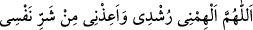
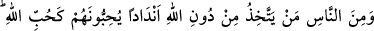
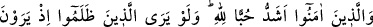
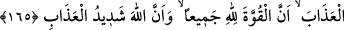
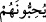

söz öğreteceğim.” dedi. Husayn müslüman oldu ve: “Ya Rasûlallah, bana o iki sözü
öğret.” diye talepte bulundu. Bunun üzerine Resûl-i Ekrem (s.a.) Efendimiz ona:
“Allah’ım! Bana doğruyu ilham et ve beni nefsimin şerrinden koru, de.”[54] buyurdu.
165. İnsanlardan bazıları Allah’dan başkasını Allah’a denk tanrılar edinir de
onları Allah’ı sever gibi severler. İman edenlerin Allah’a olan sevgileri ise
(onlarınkinden) çok daha fazladır. Keşke zâlimler azâbı gördükleri zaman
(anlayacakları gibi) bütün kuvvetin Allah’a ait olduğunu ve Allah’ın azâbının çok
şiddetli olduğunu önceden anlayabilselerdi.
Endâd “nidd” kelimesinin çoğulu olup birbirine benzeyen putlar mânâsını taşır.
Müşriklerin bozuk anlayışlarına göre taptıkları putlar Allah’a eşti ve O’na
benzemekteydiler. Çünkü onlardan fayda ve zarar umuyorlardı. İsteklerini onlara
arzediyorlar ve kurbanlarla onlara yaklaşmaya çalışıyorlardı.
(
) ifâdesinde putlar hakkında, akıllılar için olan ( ) zamiri kullanılmıştır. Bu,
müşriklerin putlarını akıllı varlıklar olarak vasıflandırmalarına veya bu putların, itaat
ettikleri reisler olması ihtimaline dayanmaktadır.
Kâdî Beyzâvî şöyle demiştir: Endâd, yukarıda zikredilenlerden daha geniş bir
mânâya sâhibtir. O, insanı Allah’dan alıkoyan her şeydir. Nitekim, sûfîler ve ârifler
şöyle demektedir: Allah’dan başka kalbini meşgul ettiğin her şeyi O’na ortak yapmışsın
demektir. Şu âyet-i kerîme buna delâlet eder: “Hevâsını (kötü duygularını) tanrı
edineni gördün mü?” (el-Câsiye, 45/23)
Onlar Allah’ı sevdikleri gibi bu putları seviyorlar ve tâat ve ta’zîmde Allah ile onları
eşit tutuyorlardı. Buradaki teşbîhten murâd tesviye; yâni eşit tutmadır. Yalnız saygı ve
ta’zîmdeki bu eşit tutma onların: “Andolsun ki onlara, gökleri ve yeri kim yarattı?
diye sorsan, muhakkak “Allah” derler.” (ez-Zümer, 39/38) âyetinde de ifâde ettiği
şekilde, Allah’ın rubûbiyetini ikrâr etmelerine münâfi, aykırı değildir.
“Muhabbet” kelimesi, buğday ve arpa tanesi gibi tane veya tohum mânâsına gelen
“habb” kökünden alınmıştır. Her ikisi de acâib ve garib gelişmelerin başlangıç
noktasını teşkil etmesi sebebiyle süveydâ-yı kalb dediğimiz nokta, bildiğimiz taneye